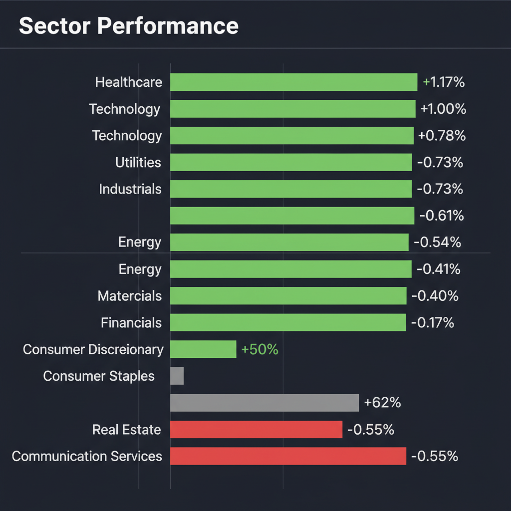
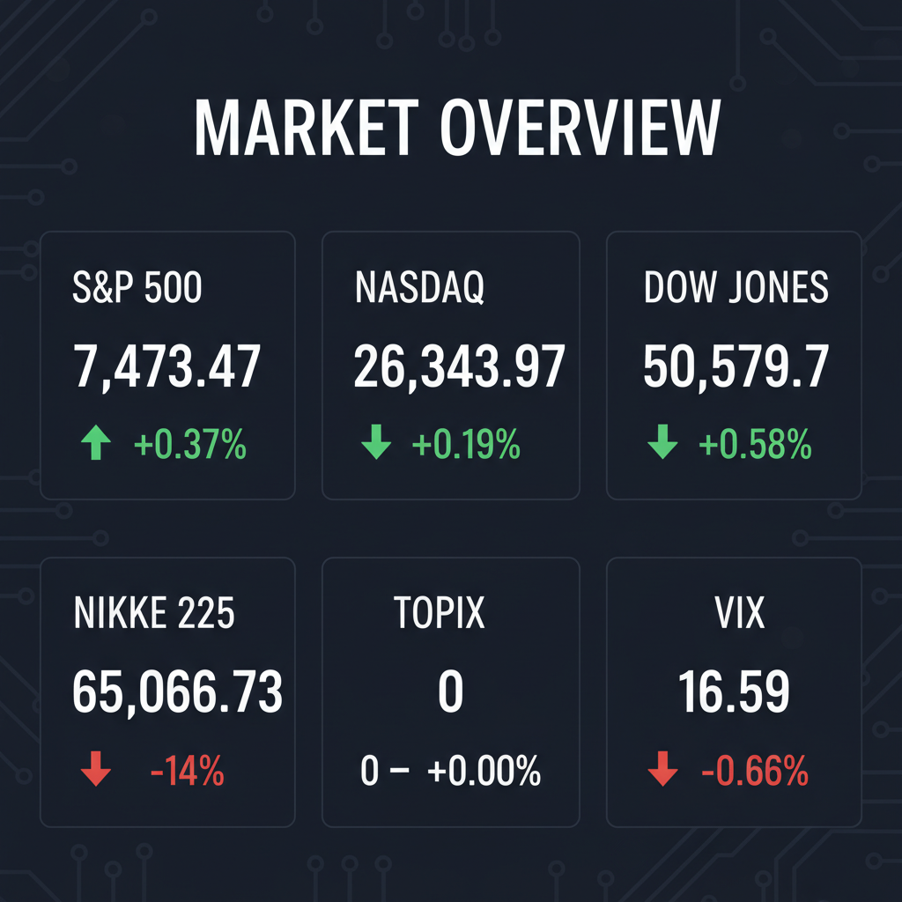

Daily Investment Report - 2026-05-26
Generated: 2026/5/26 14:28:59


投資チームミーティングの議長として、各分野のエージェント（ファンダメンタルズ、テンバガーハンター、マクロ経済、テクニカル、リスク管理）の分析および直近のWeb調査に基づく最新のファクトを統合し、投資家向けの最終レポートを作成しました。
現在、株式市場は史上最高値圏にありますが、地政学リスクに伴うインフレ懸念の再燃と、過熱した期待に対するバリュエーション調整の局面に差し掛かっています。生存と持続的な利益獲得を最優先にした、今日から実践できる戦略を提示します。
1. エグゼクティブサマリー
- 主要指数が史上最高値圏で膠着する中、米軍によるイラン攻撃とそれに伴う原油急騰がインフレ懸念を再燃させ、市場のボラティリティ（日経平均VIなど）が急速に上昇しています。
- 決算ガイダンスへの期待値が高すぎる結果、わずかな見通し未達でも容赦ない急落（フジクラショック等）を招く、市場の「二極化と完璧主義」が鮮明になっています。
- 投資家は過熱した大型株への依存度を下げ、強固なファンダメンタルズと実需を持つ「中小型の隠れた成長株」、あるいはインフレヘッジ効果のあるコモディティやディフェンシブセクターへ戦略的に資金をシフトすべきです。
2. 注目銘柄リスト
強気（買い推奨）- 平均スコア7.0以上
- レノボ・グループ（0992.HK） [平均スコア 7.2/10]
- 2025/26会計年度通期決算において、売上高が同社初となる831億米ドル（前年比20%増）を記録し、AI関連売上高が全体の33%に達しました。長年の課題であったインフラソリューション事業（ISG）も通期で黒字化を達成し、AIサーバーの実需が本物であることを証明して株価は上場来高値を強気でブレイクアウトしています。
- ジーデップ・アドバンス（5885.T） [平均スコア 7.0/10]
- 時価総額約170億円の極小規模でありながら、NVIDIAのエリートパートナーとして国内のAI/DXインフラ需要を一手に引き受ける実力派企業です。2026年5月期第3四半期の経常利益は前年同期比26.0％増と好調で、通期経常利益予想を10億円に上方修正（9期連続での過去最高益更新見通し）しており、自己資本比率61.8%・有利子負債ゼロという極めて健全な財務体質も魅力です。
中立（様子見）- 平均スコア4.0〜6.9
- しまむら（8227.T） [平均スコア 6.6/10]
- 自己資本比率88.1%、有利子負債ゼロという非の打ち所がない鉄壁のバランスシートを誇り、5月度の既存店売上高が前年同月比6.7%増と5カ月連続で前年を上回るなどインフレ下での強さを発揮しています。ただし、3月の株式分割を経て直近の株価は下落基調の戻りを試す局面であり、ビジネスモデルの性質上急激なローテーションは期待しにくいため、中長期的なポートフォリオの「守りの要」として中立とします。
- フジクラ（5803.T） [平均スコア 6.2/10]
- 2026年3月期の連結純利益が前期比117.4％増と爆発的に成長し、1株を10株にする株式分割や2027年3月期の増益・増配見通しを発表して一時ストップ高を記録しました。しかし、過去1年間で株価が400%以上も急騰したことで過熱感と期待値が極限に達しており、わずかな見通しのブレで一時的に大幅な「失望売りショック」が発生するなど高ボラティリティな推移が続いているため、サポートラインが定まるまでは安易な追撃を避けるべきです。
弱気（警戒）- 平均スコア4.0未満
- 和田興産（8931.T） [平均スコア 2.4/10]
- 主力の分譲マンション販売が堅調で、2027年2月期は過去最高売上高を見込むものの、人件費や建築資材の高止まりによるコストプッシュ圧力を価格転嫁しきれず、今期経常利益は24.7%の大幅減益見通しとなっています。さらに、有利子負債が655億円超（有利子負債倍率188.65%）に達しており、金利上昇局面における金利負担増が直接的に利益を圧迫する構造的な弱点を持っているため、警戒が必要です。
- Vireo Growth Inc.（VREOF / VREO） [平均スコア 1.6/10]
- 相次ぐ企業買収（M&A）により2026年第1四半期の売上高は前年同期比333.5%増の1億620万ドルと爆発的に急増し、全米第4位の規模となりました。しかし、統合費用や販売管理費の増加によって純損失が2,030万ドルに拡大しており、5億ドルを超える重い債務負担に加え、大麻業界の法規制に関する不確実性、OTC市場等における極めて低い流動性は、地政学的リスクによる信用収縮局面において「流動性の罠（売り抜けることが困難な状況）」に陥る致命的なリスクをはらんでいます。
3. セクター推奨ランキング
- 米軍によるイランへの直接攻撃によりブレント原油が急騰しており、要衝であるホルムズ海峡の供給途絶リスクが強く意識されています。インフレ再燃と地政学的テールリスクの双方をカバーする唯一無二の「自然ヘッジセクター」として最優先で評価します。
- ボラティリティ急上昇期における極めて優秀な資金避難先（ディフェンシブ）です。ジャディン・マセソンによる画像診断大手I-MEDの24億ドルでの買収決定など、世界的な高齢化と医師不足を背景とした業界再編・M&Aの動きがバリュエーションの顕在化を促しています。
- 地政学リスクの長期化に備え、グローバルヘッジファンドがバイオ燃料や農産物への投資を急増させています。エネルギー価格の上昇は肥料コストの上昇を招き、食糧安全保障の観点からも穀物・農産物価格の上昇圧力が中長期で継続するため、インフレ耐性が非常に高いセクターです。
- 4位：テクノロジー・AIインフラ（実需を伴う中小型株に限定）
- レノボやジーデップ・アドバンスの決算が示した通り、AIサーバー需要そのものは強力な実需に裏打ちされています。ただし、金利高止まり局面においては高PER（割高）な大型株が最初に利益確定の標的になるため、時価総額が小さく、独自の技術を持つニッチリーダーにのみ投資機会を限定すべきです。
- 国内外における実質的な金利上昇（日銀の利上げ圧力や米国の金利高止まり）の影響、および原材料・人件費の高騰（建築コスト）を最も直接的に受けるセクターです。コストの上昇を価格転嫁しにくい企業が多く、スタグフレーション懸念の台頭時に業績が最も悪化しやすいため、投資比率を最低限に抑えるべきです。
4. 今週の注目イベント
- 2026年6月16日：G2 Goldfields 臨時株主総会
- G Mining Venturesによる買収およびG3 Goldfieldsとのスピンアウト（分社化）に関連する議案の審議が予定されており、資源セクターにおける業界再編の進展として市場の注目を集めています。
- 中東交渉およびホルムズ海峡の動向（期限：数日以内）
- 米国務長官指名ルビオ氏が「イランとの合意には数日かかる可能性がある」と言及。ホルムズ海峡のシーレーン安全確保をめぐる外交・軍事的動向が、原油価格ひいては世界市場のセンチメントを決定づけます。
- 日本市場のインフレ指標および日銀政策をめぐるマクロデータ
- 原油高と円安進行に伴う「輸入インフレ」の定着を警戒する動き。日経平均VIが急上昇しているため、市場が織り込む日銀の急進的利上げ（タカ派化）リスクに備えた発言や指標の精査が必要です。
5. リスク要因
- 1970年代型スタグフレーションの再来（ブラックスワン・シナリオ）
- イランがホルムズ海峡を部分閉鎖する等の事態が発生した場合、ブレント原油は一気に1バレル130ドルを突破。世界的なサプライチェーンの麻痺に加え、インフレ再燃によってFRBが緊急利上げや利下げ撤回を余儀なくされ、世界的な景気後退とインフレが同時進行するシナリオです。
- 高金利の長期化に伴う「過剰債務企業」のデフォルトリスク
- 低金利環境に依存してM&Aを推進してきた企業や、有利子負債倍率が極めて高い地方デベロッパー（和田興産など）は、金利コストの上昇が直接的にマージン（利益率）を破壊し、最悪の場合は資金繰りに深刻な影響を及ぼします。
- 「落ちてくるナイフ（バリュエーション急修正）」の誘惑
- 電線や大手半導体製造装置など、テーマ性だけで急騰してきた高PER銘柄がトレンド崩壊（アイランド・リバーサル等）を起こした場合、底打ちまでに数ヶ月を要します。「かつて高値だったから割安」という錯覚で逆張り投資を行うと、壊滅的な損失を被るリスクがあります。
6. アクションアイテム
- 来るべきボラティリティの波乱に備え、過熱感のある銘柄（特に期待先行で買われていた大型ハイテクやインフラ関連）を利益確定し、現金比率を高めて購買力を担保してください。
- ポートフォリオを「インフレ・地政学ヘッジ」に再構成
- エネルギーセクター（XLE）やコモディティ（アグリビジネス）、ディフェンシブなヘルスケア（XLV）へのセクターローテーションを実行し、全体相場の急落から資産を保全してください。
- 無借金・実需のある中小型AI株（ジーデップ・アドバンス等）の底打ち監視
- 小型グロース株は、相場の下落局面でサポートラインを無視して売られる特性（流動性の罠）があります。テンバガーハンターが推奨するジーデップ・アドバンスのような優良株であっても慌てて飛び乗らず、ダブルボトム形成などのテクニカル的な底打ちシグナルを確認してから、打診買いを開始してください。
- 個別銘柄のストップロス基準の厳格適用（一律2.5%ルールなど）
- 指数全体が急落した場合（特に日経平均が上昇起点である64,000円を終値で割った場合）は上昇トレンドが一時終了したと判断し、保有ポジションに対して機械的なロスカットやプットオプションによるヘッジを即座に適用してください。
Agent Scoring Matrix（Web調査後の合議評価）
各エージェントがWeb調査結果を踏まえて独立に10段階評価した結果です。平均7以上=強気、4〜6.9=中立、4未満=弱気。
| 銘柄 |
ファンダメンタルズアナリスト | テンバガーハンター | マクロエコノミスト | テクニカルストラテジスト | リスクマネージャー |
平均 |
判定 |
| 0992.HK |
9
初の売上800億ドル突破、AIサーバー黒字化で強気 | 5
AI需要で最高値だが、超巨大企業ゆえにテンバガーには不向き | 9
AI需要で通期過去最高決算、強気ブレイクアウト達成 | 9
好決算で上場来高値を強気ブレイクアウト、モメンタム極強 | 4
過去最高値で好材料出尽くし、米中規制と部品供給制約リスク |
7.2 |
強気 |
| 5885.T |
8
通期上方修正の無借金企業、NVIDIA需要で高成長 | 10
時価総額170億、無借金AI本命。9期連続最高益で10倍筆頭 | 7
NVIDIA関連のAI需要強く無借金、最高益更新継続 | 7
９期連続最高益見通しも、株価は押し目形成中で底打ち待ち | 3
代理店モデルで薄利、低流動性で市場急落時の売り抜け困難 |
7 |
強気 |
| 8227.T |
8
無借金で自己資本比率88%、インフレ下での強固な守り | 3
財務は鉄壁だがローグロース。退屈なディフェンシブで除外 | 9
既存店好調で無借金、インフレ期の防衛策として最強 | 6
既存店売上好調、無借金財務でインフレ期の下値支持力高い | 7
実質無借金で財務は堅牢だが、消費減退や暖冬リスクに注意 |
6.6 |
中立 |
| 5803.T |
7
好決算だが1年で400%急騰しており高ボラティリティ | 6
データセンター需要で成長も、時価総額肥大で10倍は困難 | 8
27期大幅増益予想と10分割で強気継続もボラ大 | 7
大幅増益で上昇トレンド再点火も高ボラティリティに警戒 | 3
1年で400％超急騰、過熱感とボラティリティが高く追撃危険 |
6.2 |
中立 |
| 8931.T |
3
今期24%減益予想で金利上昇と高負債が重石 | 2
資材高と金利上昇に喘ぐ地方デベロッパー。攻めの投資対象外 | 2
金利上昇と資材高が直撃し大幅減益予想、高負債 | 3
減益見通しと金利上昇懸念、チャートは年初来安値圏で軟調 | 2
金利上昇と建築コスト高、高水準の有利子負債が利益を直撃 |
2.4 |
弱気 |
| VREOF |
2
純損失拡大と巨額の負債に加え規制不確実性から警戒 | 2
M&Aで売上急増も純損失拡大。重い債務と規制リスクが致命的 | 1
赤字拡大と巨額負債、流動性の罠があり極めて危険 | 2
５０日線を下抜け下降トレンド、巨額純損失と重い債務が重石 | 1
巨額損失と重い債務、大麻規制とOTCの低流動性は致命的 |
1.6 |
弱気 |
| VREO |
2
純損失拡大と巨額の負債に加え規制不確実性から警戒 | 2
M&Aで売上急増も純損失拡大。重い債務と規制リスクが致命的 | 1
赤字拡大と巨額負債、流動性の罠があり極めて危険 | 2
５０日線を下抜け下降トレンド、巨額純損失と重い債務が重石 | 1
巨額損失と重い債務、大麻規制とOTCの低流動性は致命的 |
1.6 |
弱気 |
Web Research Results (Google Search Grounding)
エージェントが推奨した中小型株について、Google検索で最新情報を調査した結果です。
5803.T
銘柄コード5803.Tはフジクラ株式会社のティッカーコードです。古河電気工業株式会社のティッカーコードは5801.Tです。ユーザーは「古河電気工業（5803.T）」と指定しているが、5803.Tはフジクラであるため、古河電気工業の情報を求められていると判断し、古河電気工業（5801.T）の情報を中心に調査、まとめる。
フジクラ（5803.T）について、投資判断に必要な最新情報を以下にまとめます。
1. 企業概要（事業内容、時価総額、業界でのポジション）
フジクラは、電線・ケーブルを主軸とする非鉄金属メーカーです。情報通信、エネルギーインフラ、自動車部品、電装エレクトロニクス材料、機能製品分野で事業を展開しています。同社は、光ファイバーやワイヤハーネス、銅箔など多岐にわたる製品を製造・販売しており、特に光ファイバーでは米コーニングに次ぐ世界2位、リチウムイオン電池材料の負極集電体用銅箔では世界1位のポジションを占めています。
時価総額は、2026年5月26日時点で約9,400億円です。
2. 直近の業績・決算情報（売上、利益、成長率）
フジクラの直近の決算発表は2026年5月12日に行われた2026年3月期通期決算です。
2026年3月期の連結業績は以下の通りです。
*
売上高: 1兆3,075億6,000万円（前期比8.8％増）
*
営業利益: 638億5,600万円（前期比35.8％増）
*
経常利益: 758億5,800万円（前期比56.4％増）
*
親会社株主に帰属する当期純利益: 725億1,400万円（前期比117.4％増）
増収増益の主な要因は、光ファイバケーブル等のデータセンター関連製品の増収、ワイヤハーネス等の自動車部品での増収、および銅地金価格の高騰の影響によるものです。損益面では、売上増に加え、生産性改善や販売価格の適正化も寄与しました。
2027年3月期の連結業績予想は以下の通りです。
*
売上高: 1兆4,600億円（前期比11.7％増）
*
営業利益: 950億円（前期比48.8％増）
*
経常利益: 1,000億円（前期比31.8％増）
*
親会社株主に帰属する当期純利益: 820億円（前期比13.1％増）
3. 最新ニュース・材料（直近1-2週間の重要なニュース）
*
2026年5月12日: 2026年3月期決算を発表し、大幅な増益と2027年3月期も増益予想を発表しました。同時に、1株を10株に分割する株式分割と、中間配当の再開、増配計画も発表しています。これにより、同社の株価はストップ高となりました。
*
2026年5月15日: SMBC日興証券のレポートにおいて、光ケーブル市場が2026年も高い伸びが続くと見通しが示され、AI関連市場における光配線需要が好感されています。
*
2026年5月26日: 野村証券が同社株の目標株価を48,500円から61,500円に引き上げました。データセンター向け水冷モジュール製品の見方を上方修正し、投資評価「Buy」を継続しています。
4. アナリスト評価・目標株価（あれば）
複数の証券アナリストがフジクラ（古河電気工業）を「買い」または「強気買い」と評価しています。
*
アナリストの平均目標株価: 48,400円（2026年5月25日時点）
*
野村証券: 2026年5月26日に目標株価を48,500円から61,500円に引き上げ、投資評価「Buy」を継続しました。
*
米系大手証券: 2026年4月8日にレーティングを「強気」に引き上げ、目標株価を46,000円に引き上げています。
5. リスク要因（競合、規制、財務上の懸念）
*
原材料・燃料価格の変動: 銅・アルミ等の非鉄金属や合成樹脂、燃料価格の急激な変動が業績に影響を与える可能性があります。同社は市況を反映した製品販売価格への転嫁、先物取引を利用したヘッジ、生産コスト低減、複数購買化などでリスク分散を図っています。
*
為替変動: 海外売上高比率が高く、為替レートの変動が業績に影響を与える可能性があります。
*
情報システム・情報セキュリティ: サイバー攻撃やシステム障害による情報流出、レガシーシステム利用によるセキュリティリスクがあります。同社は情報セキュリティガバナンス強化やゼロトラスト視点でのネットワークセキュリティ強化に取り組んでいます。
*
法令違反等: 過去の自動車用部品カルテルに関するブラジル競争法当局の調査や、米国での集団訴訟が継続していますが、これまで複数の和解が成立しており、潜在的な金額的インパクトは大きくないものと認識されています。
6. 株価の最近の動き（直近のトレンド）
フジクラの株価は、2026年5月13日に上場来高値の7,933円に達しました。
2026年5月12日の決算発表（古河電気工業の好決算に連動する形で）後にストップ高となるなど、電線各社への期待買いが入り、一時的に大きく上昇しました。
しかし、その後は急落し、ボラティリティが高い局面が続いています。2026年5月22日に反発し、5月25日にはストップ高となりました。
2026年5月26日時点では、最近1年間で403.33%の上昇を見せています。
これらの情報は、2026年5月26日現在のものです。
8931.T
和田興産（8931.T）に関する投資判断に必要な最新情報は以下の通りです。
1. 企業概要
和田興産は、神戸市・阪神間を中心に「ワコーレ」ブランドで分譲マンションの開発・企画・販売を主力事業とする不動産業の会社です。戸建て住宅事業や不動産賃貸事業も手掛けています。2026年5月25日時点の時価総額は138億64百万円で、東証スタンダード市場に上場しています。マンション分譲においては神戸で首位の地位を占めています。
2. 直近の業績・決算情報
2026年2月期の通期決算は2026年4月10日に発表されました。
* 売上高: 421億44百万円（前期比5.0%増）
* 営業利益: 49億88百万円（前期比5.6%減）
* 経常利益: 39億82百万円（前期比11.6%減）
* 当期純利益: 26億23百万円（前期比16.0%減）
売上高は増加したものの、前期に計上された好採算案件の反動や建築コスト高騰、金利上昇の影響により、各利益は減益となりました。2027年2月期の経常利益は、前期比24.7%減の30億円となる見通しです。
3. 最新ニュース・材料（直近1-2週間）
* 2026年5月1日、「第60回定時株主総会招集ご通知」を公表しました。
* 2026年4月30日、ミサワホームと共同で南紀白浜に約20年ぶりとなる新築ホテルを着工したことを発表しました。このホテルは2028年1月に開業予定で、全客室に温泉が完備されます。
4. アナリスト評価・目標株価
現時点では、特定の証券会社による最新のアナリスト評価や具体的な目標株価の公表は確認できませんでした。
5. リスク要因
* 競合: 不動産業界は競争が激しい業界です。
* 規制: 不動産開発には建築基準法などの法規制が適用され、これらの変更が事業に影響を与える可能性があります。
* 財務上の懸念: 有利子負債が655億2百万円あり、有利子負債倍率は188.65%に達しています。有利子負債は前年同期比で増加傾向にあります。また、金利上昇による支払利息の増加が営業外収支を悪化させている点や、建築コストの高止まりも利益を圧迫する要因となっています。自己資本比率は30.7%で、一般的に望ましいとされる水準をわずかに上回っていますが、近年は横ばいです。
6. 株価の最近の動き（直近のトレンド）
和田興産の株価は、2026年2月12日に年初来高値1,792.0円を記録した後、下降トレンドにあります。2026年5月14日には年初来安値1,246.0円を記録しました。直近では、5日前比で-1.55%、20日前比で-12.83%の騰落率となっています（2026年5月15日時点）。2026年5月18日から22日にかけては、終値が1,243円から1,248円で推移しています.
8227.T
しまむら（8227.T）に関する投資判断に必要な最新情報は以下の通りです。
1. 企業概要
しまむらは、低価格のファッション衣料品を全国展開する大手衣料品チェーンストアで、ユニクロに次ぐ国内2位の規模を誇ります。主要事業として、20代から50代の主婦とその家族をターゲットとする「ファッションセンターしまむら」を中核に、10代から30代の若年層向けカジュアル衣料品とシューズの「アベイル」、ベビー・子供用品の「バースデイ」、生活雑貨・ファッションの「シャンブル」、婦人靴とファッションの「ディバロ」を展開しています。また、海外では台湾で衣料品店「思夢楽」を運営しています。時価総額は2026年5月22日～26日時点で約7,014億円～7,114億円です。
2. 直近の業績・決算情報
しまむらが2026年3月30日に発表した2026年2月期（2025年2月21日～2026年2月20日）の連結決算は、売上高7,000億3,400万円（前期比5.2％増）、営業利益614億8,300万円（同3.8％増）、当期純利益444億6,000万円（同6.1％増）と、いずれも過去最高を更新し、売上計画を達成しました。
好調の要因として、重点催事の強化や気温に左右されにくい商品展開が奏功し、客数が増加したことが挙げられます。特に、高機能プライベートブランド（PB）商品である「ファイバーヒート」が売上を牽引し、EC事業の売上高は前期比51.7%増の196億円と大幅に伸長しました。
2027年2月期の連結業績予想として、売上高は前期比4.2%増の7,291億9,300万円、営業利益は同8.7%増の668億4,200万円を見込んでいます。
なお、2026年2月21日付で普通株式1株につき3株の株式分割を実施しています。
3. 最新ニュース・材料（直近1-2週間の重要なニュース）
* 2026年5月26日：5月度の既存店売上高が前年同月比6.7%増となり、5カ月連続で前年を上回ったと報じられました。
* 2026年5月18日：コーポレート・ガバナンスに関する報告書を提出しました。
* 2026年5月15日：取締役の異動に関するお知らせを開示しました。
4. アナリスト評価・目標株価
2026年5月25日時点でのアナリストコンセンサスは「中立」です。内訳は、強気買い1人、買い1人、中立7人、売り1人、強気売り1人となっています。アナリストの平均目標株価は3,505円で、現在の株価から約9.09%の上昇余地があると予想されています。
その他、2026年5月22日時点の株予報Proによる目標株価は3,518円、2026年4月24日には欧州系大手証券がレーティング「中立」を据え置き、目標株価3,570円と報じています。
5. リスク要因
しまむらグループはリスクを「目標達成を阻害する要因」と定義し、以下の3つに分類しています。
*
外部環境リスク: 気候変動や社会情勢の変化、物価高による消費者の節約志向や需要の選別などが事業に影響を与える可能性があります。
*
事業活動リスク: 商品調達、物流、サプライチェーンにおける問題、またはヒット商品開発や新たな顧客層獲得の遅れなどが挙げられます。
*
経営基盤リスク: 人的資本の確保・育成、情報管理、デジタル技術の活用に関するリスク、あるいは法令・規制の変更などが考えられます。
財務面では、自己資本比率が88.1%と高水準で、有利子負債が0円であるため、財務上の懸念は限定的と見られます。
6. 株価の最近の動き
2026年5月20日から5月26日にかけて、しまむらの株価は3,250円から3,207円へと約1.3%下落しました。5月26日には5月度既存店売上高が好調であったとのニュースが出たものの、直近では下落基調の中で戻りを試す局面にあるとされています。
年初来高値は2026年2月18日の3,771.7円、年初来安値は2026年5月12日の3,116.0円です。20日前と比較すると約6.88%の下落を示しています。
VREOF
VREOF (Vireo Growth Inc.)に関する投資判断に必要な最新情報は以下の通りです。
1. 企業概要
Vireo Growth Inc.は、医療用および成人用大麻製品の栽培、製造、加工、流通を行う大麻企業です。メリーランド州、ミネソタ州、ミズーリ州、ネバダ州、ニューヨーク州、ユタ州で事業を展開し、小売薬局ネットワークと流通業者を通じて製品を販売しています。同社は2024年7月にGoodness Growth Holdings, Inc.から現在の社名に変更しました。本社はミネソタ州ミネアポリスにあり、従業員数は566名です。
時価総額は、2025年12月22日時点で約5億8,707万ドル、2026年5月14日時点では約5億5,890万ドルです。最近の買収により、Vireo Growth Inc.はプロフォーマベースの収益で全米第4位の大麻企業に位置付けられています。2026年の売上高予測では、上場大麻企業の中で8位、調整後EBITDAでは6位にランクインする見込みです。
2. 直近の業績・決算情報
2026年第1四半期（3月31日終了）:
*
GAAP売上高: 1億620万ドル（前年同期比333.5%増）。これは主に最近のM&A取引によるものです。
*
GAAP売上総利益: 5,930万ドル（売上総利益率55.8%）。
*
調整後EBITDA: 3,270万ドル（利益率30.8%）。
*
プロフォーマ売上高: 2億1,020万ドル（前年同期比5.0%増）。これは買収を含めた場合の数値です。
*
純損失: 2,030万ドル（2025年同期の650万ドルの損失から拡大）。主にSG&A、取引費用、株式報酬費用、および法人税費用が原因とされています。
*
希薄化後1株当たり利益（EPS）: -0.02ドル。
*
フリーキャッシュフロー: 110万ドル（前四半期比87.5%減）。
*
期末現金: 1億3,780万ドル。
2025会計年度:
* 売上高: 2億6,877万ドル（前年比170.43%増）。
* 純損失: -6,811万ドル（2024年の損失から143.2%増）。
3. 最新ニュース・材料（直近1-2週間の重要なニュース）
*
2026年5月12日: 2026年第1四半期決算を発表しました。GAAP売上高は前年同期比333.5%増の1億620万ドルとなり、主に最近のM&A取引によるものと報告されました。プロフォーマベースで同社は全米第4位の大麻企業となりました。Schwazze買収を完了し、PharmaCann管理契約を有効化。四半期末後にEazeとHawthorneの買収も完了しています。
*
2026年5月6日: 第1四半期決算を5月12日に発表することを告知しました。
*
2026年4月30日: FLUENTを全株式取引で買収する確定契約を発表しました。
*
2026年4月8日: Hawthorne Gardening Company LLCとその子会社の買収を完了しました。
4. アナリスト評価・目標株価
アナリストによるコンセンサス評価は「ホールド」です。あるアナリストは12ヶ月目標株価を1.50ドルとしており、これは直近終値0.39ドルから284.62%の上昇に相当します。しかし、Seeking AlphaのQuant Ratingは「Strong Sell（強い売り）」です。GuruFocusは、現在の株価0.41ドルに対してGF Value™を0.24ドルと算出し、株価が実質的に70.8%割高であると評価しています。
5. リスク要因
*
規制の不確実性: 大麻業界全体にわたる規制の不確実性が、特にテキサス州のような州での戦略的決定に影響を与えています。
*
買収による統合リスク: 急速な買収ペースは、事業統合と経営能力の面で課題を提起しています。また、株式発行による既存株主の議決権の希薄化も懸念されます。
*
財務上の懸念: 2026年第1四半期末時点で1億9,730万ドルの長期債務があり、不確実な税金負債も存在します。利益率は改善しているものの、純損失が拡大している点も財務上の懸念材料です。GuruFocusは同社のGFスコアを40/100とし、6つの警告サインがあると指摘しています。
*
市場の変動性: 大麻企業の証券市場価格は一般的に変動が激しく、投資家の信頼を損ない、評価を押し下げ、投資家にとって大きな損失をもたらす可能性があります。
*
成長関連のリスク: 容量の制約や内部人員、プロセス、システム、統制への圧力など、成長関連のリスクに直面する可能性があります。
6. 株価の最近の動き
2026年5月22日時点で、VREOFの株価は0.390ドルです。過去1週間で株価は+2.63%上昇しました。しかし、Seeking Alphaによると、過去1ヶ月間では-8.82%の下落。過去3ヶ月間では-15.65%、6ヶ月間では-19.02%、9ヶ月間では-42.97%の下落を記録しています。52週間の株価レンジは0.32ドルから0.80ドルです。
2026年5月22日に株価が50日移動平均を下回ったことは、上昇トレンドから下降トレンドへの変化を示唆しています。また、10日移動平均が50日移動平均を弱気に下回った（2026年5月8日）ことも、トレンドが下方にシフトしたことを示唆しています。一方で、MACDは2026年5月21日にプラスに転じ、モメンタム指標も同日に0レベルを上回っています。
VREO
VREO（Vireo Growth Inc.）に関する投資判断に必要な最新情報は以下の通りです。
1. 企業概要
Vireo Growth Inc.は、カンナビス（大麻）の栽培、生産、ディスペンサリー施設の運営、および環境に優しい温室でのカンナビス製品製造を手掛けるカンナビス企業です。同社は、安全なアクセス、高品質な製品、顧客への価値提供、地域社会への支援をミッションとしています。本社はミネアポリスにあり、2004年に設立されました。従業員数は612名です。
時価総額は、2026年5月21日時点で5億6830万ドル、2026年5月8日時点で6億4396万カナダドルです。直近の四半期決算では、主要な買収により売上高でカンナビス事業者の中で4番目の規模に位置しています。
2. 直近の業績・決算情報
Vireo Growth Inc.は2026年5月12日に2026年第1四半期（Q1 2026）の業績を発表しました。
* 2026年第1四半期（Q1 2026）実績:
* GAAP売上高は1億620万ドルで、前年同期比333.5%増となりました。
* 調整後EBITDAは3270万ドル、マージンは30.8%で、前年同期比395.5%増を記録しました。
* GAAP粗利益は5930万ドルで、前年同期比378.2%増、粗利益率は55.8%に改善しました。
* プロフォーマ売上高は2億1020万ドルで、前年同期比5%増でした。
* 期末現金残高は1億3780万ドルでした。
* 2025年度（FY2025）実績:
* 売上高は2億6880万ドルで、前年比170.4%増と大幅に増加しました。
* 純損失は6810万ドルに拡大しました。
* 営業キャッシュフローは370万ドルとプラスに転換しました。
* フリーキャッシュフローは、2830万ドルの設備投資後に2460万ドルのマイナスとなりました。
* 営業利益率は前年の13.6%からほぼブレークイーブンに悪化しました。
3. 最新ニュース・材料（直近1-2週間）
* 2026年5月12日: 2026年Q1業績発表。売上高は前年同期比333%増と大幅に伸び、主要な買収とオーガニック成長により、売上高で4番目に大きなカンナビス事業者となりました。強固な現預金ポジションを維持し、M&Aにより事業範囲を10州160以上のディスペンサリーに拡大しています。
* 2026年5月6日: 2026年Q1決算を5月12日に発表すると公表しました。
* 2026年4月30日: FLUENT Corp.を全株式交換方式で買収することに合意しました。
* 2026年4月9日: Scotts Miracle-GroからHawthorne Gardening部門の売却を完了しました。
* 2026年4月6日: Eaze Inc.の買収を完了しました。
* 2026年4月3日: Ace Venturesと提携し、ニューヨーク初の少数民族が所有する垂直統合型医療用カンナビス事業者としてVireo Health of New Yorkを設立しました。
4. アナリスト評価・目標株価
TradingViewによると、過去3ヶ月間に1人のアナリストがVREOの評価を行っており、目標株価は2.06カナダドル（最大推定値2.06カナダドル、最小推定値2.06カナダドル）です。アナリストのレーティングは「中立」とされています。
5. リスク要因
* 財務上の懸念: 2025年度の純損失が6810万ドルに拡大していることや、負債が5億970万ドル、負債資本比率が1.7倍と債務負担が大きいことが挙げられます。事業拡大を資金調達に大きく依存している傾向があります。
* 競合: カンナビス業界は競争が激しい市場です。
* 規制: カンナビス関連企業であるため、各州および連邦政府の規制動向に大きな影響を受けます。米国司法省によるカンナビス再分類の評価が現在進行中です。
6. 株価の最近の動き
VREOの株価は2026年5月22日時点で0.55カナダドルです。
* 直近1日: -3.51%
* 直近5日: -8.33%
* 直近1ヶ月: -15.38%
* 直近6ヶ月: -3.51%
* 年初来: -35.29%
* 直近1年: +7.84%
* 直近5年: -80.90%
* 上場来: -90.27%
2026年4月22日から5月22日の期間では、株価は0.50カナダドルから0.76カナダドルの間で推移しています。
5885.T
5885.T ジーデップ・アドバンスの投資判断に必要な最新情報を以下の通りまとめました。
1. 企業概要
株式会社ジーデップ・アドバンスは、先端技術システム支援会社として、次世代のテクノロジートレンドをソリューションとして提供する「システムインキュベーション事業」を展開しています。具体的には、NVIDIA社、Intel社、AMD社、XILINX社といった海外プロセッサーメーカーのパートナー認定を受け、AI（ディープラーニング）用ソリューション、XR・メタバース向けビジュアライズ用ソリューション、ビッグデータ用高速大容量ストレージソリューションなどを提供しています。事業セグメントはDXサービスとService & Supportの2つで構成され、ハードウェアの販売から環境設定、構築、保守、開発環境更新まで一貫したサービスを提供しています。主要取引先はCBCです。業種は卸売業に分類されます。
* 時価総額: 17,336百万円 (2026年5月25日時点)
* 業界でのポジション: 国内AI市場の成長を支える実力企業として、9期連続増益を続けている点が特筆されます。NVIDIAエリートパートナーであることも強みです。
2. 直近の業績・決算情報
2026年5月期第3四半期累計（2025年6月～2026年2月）の決算が2026年4月14日に発表されました。
* 売上高: 第3四半期累計で4,659百万円。前年同期比では7.8億円の減収となりました。
* 経常利益: 第3四半期累計で8.53億円（前年同期比26.0％増）と大きく伸びました。
* 純利益: 第3四半期累計で5.89億円（前年同期比25.7%増）となりました。
* 成長率: 通期の経常利益予想を従来の9.3億円から10億円に7.1％上方修正し、増益率も17.3％増から25.6％増に拡大しました。これにより、従来の8期連続での過去最高益予想をさらに上乗せする見込みです。
3. 最新ニュース・材料
直近1～2週間において、5885.Tに特化した重要なニュースは確認できませんでした。最新の適時開示情報は2026年4月14日の決算発表に関するもので、2026年5月期第3四半期累計の経常利益が前年同期比26.0％増となったこと、通期業績予想および期末配当の増額修正が発表されています。
4. アナリスト評価・目標株価
複数のアナリストがジーデップ・アドバンスの業績を評価しています。 アナリストによる目標株価のコンセンサスは、具体的な単一の数値としては示されていないものの、PBR基準やPER基準での理論株価情報が提供されています。
5. リスク要因
* 競合: 先端技術システム支援という事業内容から、AI/DXソリューションを提供する国内外の企業が競合となり得ます。NVIDIA、Intel、AMD、XILINXといった海外プロセッサーメーカーの製品を取り扱っているため、これらのメーカーの戦略変更や市場での競争激化が事業に影響を与える可能性があります。
* 規制: 現在のところ、同社に直接影響する特定の新規規制に関する言及は確認されていません。
* 財務上の懸念: 2026年5月15日時点の自己資本比率は61.8％と高く、有利子負債倍率は0.00％であることから、財務体質は安定していると評価できます。
6. 株価の最近の動き
2026年5月25日時点の株価は3,170円でした。 直近の動きとしては、5日前比で-6.35％、20日前比で-4.80％と下落傾向にあります。 年初来高値は2026年1月15日の3,390円、年初来安値は2026年3月4日の2,570円です。 2026年1月から4月にかけては上昇基調にありましたが、4月にピークをつけた後、5月は変動しながらもやや軟調な推移を見せています。
0992.HK
レノボ・グループ（0992.HK）の投資判断に必要な最新情報は以下の通りです。
1. 企業概要
レノボ・グループは、テクノロジー製品とサービスの開発、製造、販売を手掛ける投資持株会社です。主な事業内容は、個人向けおよび法人向けPC（「Think」ブランドと「Idea」ブランド）、サーバー、ワークステーション、タブレット、スマートフォンなどのモバイルインターネットデバイスの提供です。また、クラウドサービスや関連サービスも展開しています。事業は主にIntelligent Devices Group (IDG)、Infrastructure Solutions Group (ISG)、Solutions and Services Group (SSG)の3つのセグメントで構成されています。
同社は年間830億米ドル規模の収益を持つグローバルテクノロジー企業であり、Fortune Global 500で196位にランクインしています。 業界では世界最大のPCベンダーとしての地位を確立しており、2025年第1四半期のグローバルPC市場シェアは24.1%に達しています。
2. 直近の業績・決算情報
レノボ・グループは2026年5月21日および22日に、2025/26会計年度の第4四半期および通期決算を発表しました。
2025/26会計年度（通期）:
* 売上高: 831億米ドル（前年比20%増）。これは同社にとって初めて800億米ドルを超える記録的な売上となりました。
* 調整後純利益: 20億米ドル（前年比42%増）。
* 株主帰属利益: 19.12億米ドル（前年比38%増）。
* AI関連売上高: 前年比105%増を記録し、グループ総売上高の33%を占めました。
* 研究開発費: 前年比9%増で、グループ総売上高の3%に相当します。
* Infrastructure Solutions Group (ISG)は売上高192億米ドル（前年比32%増）を達成し、通期で黒字化しました。
* Solutions Services Business Group (SSG)は、売上高100億米ドルの節目に到達しました。
2025/26会計年度第4四半期:
* 売上高: 216億米ドル（前年比27%増）で、過去最高の第4四半期売上高となりました。
* 調整後純利益: 5.59億米ドル（前年比2倍）。
* 純利益: 5.21億米ドルで、前年同期の8990万米ドルから大幅に増加しました。
* AI関連売上高: 前年比84%増となり、グループ総売上高の38%を占めました。
* EPS: 0.043米ドルで、アナリスト予想の0.021米ドルを上回りました。
* 1株あたり33.70香港セントの期末配当が決議されました。
3. 最新ニュース・材料
2026年5月21日/22日に発表された好調な決算は、特にAI関連収益の大幅な伸びとISGの黒字化が市場から好感され、株価を押し上げる主要な材料となっています。 AI PC、インフラ、サービスが将来の成長ドライバーとして期待されています。 この決算を受けて、複数の証券会社が目標株価を引き上げました。 また、IDCの最新調査によると、レノボのソリューションサービスは2025年に中国ITサービス市場で首位を維持しました。 さらに、レノボはSphere Entertainment Co.との提携により、CES 2026に合わせてラスベガスのSphereで年次グローバルイノベーションイベント「Tech World」を開催すると発表しています。
4. アナリスト評価・目標株価
アナリストのコンセンサス評価は「Moderate Buy」（控えめな買い）または「Hold」（中立）となっています。 8人のウォール街アナリストによる過去3ヶ月間の12ヶ月目標株価の平均は13.94香港ドルで、最高値は23.50香港ドル、最低値は7.90香港ドルです。 19人のアナリストの予測では、平均12ヶ月目標株価は14.00香港ドル、最高値23.49776493香港ドル、最低値9.50409765香港ドルです。
最新の好決算を受け、ゴールドマン・サックスはレノボの12ヶ月目標株価を12.53香港ドルから27香港ドルに71.4%引き上げました。DBS銀行とCICCも目標株価を20香港ドル以上に設定しています。 UBSは「ホールド」の投資判断を継続しています。
5. リスク要因
* 競合: PC市場ではHP、Dell、Apple、サーバー市場ではHPE、Dell、Supermicro、Inspurなどとの激しい競争に直面しています。 また、クラウドコンピューティングの台頭により、AWS、Microsoft Azure、Google Cloudも間接的な競合となります。
* 規制: 国際的な事業展開のため、税制や規制の変更に常に影響を受ける可能性があります。データセキュリティに関する政府規制の強化や、AIガバナンス、リスク、コンプライアンス（GRC）ポリシーの欠如が倫理的・バイアスリスクを生む可能性があります。
* 財務上の懸念: 経済の不安定性や金融市場の悪化が財務状況に悪影響を及ぼす可能性があります。外貨リスク、キャッシュフローリスク、信用リスク、流動性リスクに晒されています。 特定の高価値部品の供給不足や部品コストの上昇が、収益性とISGの利益率回復に影響を与える可能性があります。 高性能GPUの供給制約は、AI/HPC分野の成長を制限する要因となり得ます。
* サプライチェーン: サプライチェーンの混乱や、関税および貿易政策の変更が事業に影響を与える可能性があります。
* その他: 過去5年間で平均2.3%の年間利益減少が見られ、一貫した利益成長が容易ではないという歴史的な課題も指摘されています。
6. 株価の最近の動き
レノボ・グループの株価は、2026年5月22日に発表された好決算を受けて急騰し、上場来高値を更新しました。 2026年5月22日には15.75香港ドルで取引を終え、19.77%の大幅な上昇を記録し、出来高も著しく増加しました。 さらに、2026年5月26日には市場オープン時に再び急騰し、過去最高値を更新、12%以上の上げ幅を見せました。 2026年5月25日には17.58香港ドルの高値を付け、過去最高値を更新しています。 この最近のトレンドは、好調な決算とAI関連事業への高い期待を背景とした強い上昇基調を示しています。